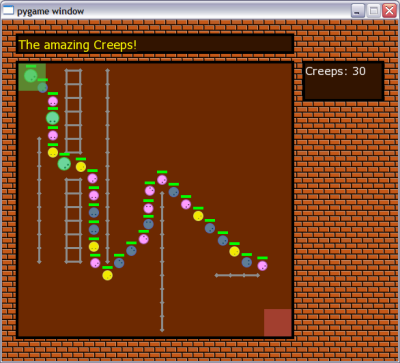
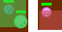
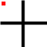
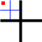

This is part IV of the "Writing a game in Python with Pygame" tutorial.
Back to the Creeps
After a digression into the exciting world of path-finding in the previous part, we're now back to our "Creeps" game. Here's a screenshot of our final product for this part:
As you can see, things look quite different now. Indeed, there's a lot of changes in the code, and a lot of new features were added for this part [1].
Here's a brief summary of what we'll go over today:
- Making creeps look prettier, especially when rotated
- Major code refactoring into classes with well-defined responsibilities
- Separation of "GUI elements" from the game logic
- Handling transparency
- Drawing walls
- Incorporating the path-finding code to create directed movement for the creeps
As you see, this is a lot of material, and indeed I feel very content with the amount of code written for this section. The final product is a very complete simulation having all the elements to turn into many kinds of games.
The code
The full code for this section can be taken from here. Make sure you download and run it (execute creeps.py) before reading the rest of this tutorial.
Prettier creeps
I've re-created the creep images using the amazing Inkscape tool. Inkscape allows to draw vector-graphics (SVG), so it's much better suited than plain pixel-banging .png for drawing figures for games. I've included the source .svg files for the creep images in the images/ directory of the code package.
But my biggest problem with the creeps of the previous parts was how creeps rotated by 45 degrees look. While rotating a square image perfectly in multiples of 90 degrees is simple, multiples of 45 are much tougher. When the image is small, there's a big change it will come up ugly, because the rotation can't perfectly convey all the information stored in it. And indeed, when I just let Pygame to rotate the images 45 degrees for me, it didn't look very pretty.
So I've taken a different path this time. I rotated the images to 45 degrees in Inkscape (which does it perfectly because it stores them as vector graphics), and now there are two images for each creep: one pointing "east" and one pointing "north-east". Given these two, with rotations by 90 degrees I can achieve all 8 possible multiples of 45 degrees. You will notice in the code that Creep now accepts a pair of images as an argument, and unpacks them:
# base_image_0/45 hold the original images, un-rotated
#
self.base_image_0 = creep_images[0]
self.base_image_45 = creep_images[1]
Now the image rotation is done as follows:
# Make the creep image point in the correct direction.
# Note that two images are used, one for diagonals
# and one for horizontals/verticals.
#
# round() on the angle is necessary, to make it
# exact, despite small deviations that may result from
# floating-point calculations
#
if int(round(self.direction.angle)) % 90 == 45:
self.image = pygame.transform.rotate(
self.base_image_45, -(self.direction.angle + 45))
elif int(round(self.direction.angle)) % 90 == 0:
self.image = pygame.transform.rotate(
self.base_image_0, -self.direction.angle)
else:
assert False
If the creep's current direction is an odd multiple of 45 degrees, the 45-degree image is used for rotations. Otherwise the 0-degree image is used.
This way all creeps look pretty now rotated in whichever direction.
Code refactoring
The creeps code after part II wasn't exactly production quality. It was what experimentation-code usually looks like, and except the Creep class, it wasn't very well organized.
If you look at the code now, the situation is different. I've separated it to several classes, and moved out related functionality into separate files. A lot of the code that was just dispersed in the main file was collected into the Game class, which is responsible for creating and running the game.
Another interesting change was the addition of the Timer class (in utils.py). Timer mimics the behavior or timers in event-driven systems like GUI toolkits. You create it with an interval and a callback function. Then, as time passes you should update it with the amount of time passed (just like calling the update of creeps to let them compute their position), and the timer will call the callback periodically (with the supplied period).
A good example of the use of the timer is in the SimpleAnimation class (simpleanimation.py) which we use to show how creeps "explode" when their life bar reaches 0. The constructor of the animation creates two timers:
self.scroll_timer = Timer(scroll_period, self._advance_img)
self.active_timer = Timer(duration, self._inactivate, True)
The scroll timer is responsible for scrolling through the animation's images periodically, while the active timer is responsible for inactivating the animation after its duration has passed (it's also a one-shot timer, which means it only acts once).
This is a good example of decoupling. Timer takes care of the common task of keeping time and doing events periodically, so now "user" code like SimpleAnimation doesn't have to implement time keeping explicitly itself.
Another example of the usage of Timer is in the Game class. Feel free to explore how creep_spawn_timer is used to periodically "spawn" new creeps into the game.
GUI "widgets"
If you've ever programmed GUIs, you've undoubtedly run into the term "widget". A widget is a generic graphical GUI element that you see on the screen and can sometimes interact with. Text boxes are widgets, buttons are widgets, scroll boxes, tables, labels are widgets, etc.
Pygame is not a GUI toolkit. It's a more low-level tool that specializes in graphics - efficient drawing on the screen. This, together with the concept of time, is all one really needs to create widgets, though, and indeed several GUI libraries for Pygame sprang up.
Rather than using a ready-made library, I've decided to create just the primitives I need for the creeps game. See widgets.py for two useful widget classes that I use for drawing framed boxes and message boards.
The classes are very simple - each has a constructor and a draw method, along with other utility methods [2].
By taking out these utilities into a separate file as widget classes, I've achieved another goal of refactoring - keeping logically separate code in different files. Now the main code can create boxes and message boards at its will, without worrying too much about how they're implemented.
Handling transparency
You've surely noticed by now that creeps come out from a semi-transparent square in the upper-left corner of the screen and disappear into a similar square in the bottom-right corner.
These squares are drawn transparently as follows:
def draw_portals(self):
entrance_sf = pygame.Surface((self.entrance_rect.w, self.entrance_rect.h))
entrance_sf.fill(Color(80, 200, 80))
entrance_sf.set_alpha(150)
self.screen.blit(entrance_sf, self.entrance_rect)
exit_sf = pygame.Surface((self.exit_rect.w, self.exit_rect.h))
exit_sf.fill(Color(200, 80, 80))
exit_sf.set_alpha(150)
self.screen.blit(exit_sf, self.exit_rect)
The "magic" here is done with the set_alpha method of a Surface. Alpha in graphics nomenclature means the measure of transparency of a color - how much it will be blended into its background when drawn.
Note that these "portals" are drawn after the creeps are drawn. Can you figure out why? (see exercise 1).
Drawing walls
Since we're making our creeps avoid obstacles using path-finding, we should have some obstacles, right? Obstacles in our game are "walls", and are kept in the dictionary self.walls inside the Game object. The walls are drawn onto the screen as follows:
def draw_walls(self):
wallcolor = Color(140, 140, 140)
for wall in self.walls:
nrow, ncol = wall
pos_x = self.field_rect.left + ncol * self.GRID_SIZE + self.GRID_SIZE / 2
pos_y = self.field_rect.top + nrow * self.GRID_SIZE + self.GRID_SIZE / 2
radius = 3
pygame.draw.polygon(self.screen, wallcolor,
[ (pos_x - radius, pos_y), (pos_x, pos_y + radius),
(pos_x + radius, pos_y), (pos_x, pos_y - radius)])
if (nrow + 1, ncol) in self.walls:
pygame.draw.line(self.screen, wallcolor,
(pos_x, pos_y), (pos_x, pos_y + self.GRID_SIZE), 3)
if (nrow, ncol + 1) in self.walls:
pygame.draw.line(self.screen, wallcolor,
(pos_x, pos_y), (pos_x + self.GRID_SIZE, pos_y), 3)
First, a polygonal "blob" is drawn in the center of the grid square [3] where the wall is located. Then, the neighbor squares are examined (see exercise 2). If a neighbor has a wall in it too, the two are connected by a thick line, making an appearance of a real wall.
Creep, find thy way!
It's a good time to review part III of the tutorial now, because I assume you already know what's explained there (namely, what path-finding is, and how I've implemented it).
Implementing path-finding for the game
Two classes were important in my implementation of path-finding on a rectangular grid:
- GridMap, which represents a rectangular grid, providing methods to set which squares are blocked and cost functions for the path-finding code.
- PathFinder, a generic, efficient A* path-finder that receives an abstract representation of the game graph (via successors and cost functions) and computes optimal paths from point to point on that graph.
For creeps, I've created a proxy class named GridPath that encapsulates the interaction with the path-finding code completely, providing a convenient interface for the creeps. It's only 50 lines of code or so, most of it comments and doc-strings, so you can easily understand it.
Here's the constructor:
def __init__(self, nrows, ncols, goal):
self.map = GridMap(nrows, ncols)
self.goal = goal
# Path cache. For a coord, keeps the next coord to move
# to in order to reach the goal. Invalidated when the
# grid changes (with set_blocked)
#
self._path_cache = {}
You can see that it uses GridMap under the hood to implement the rectangular map with its costs and successor function.
The main trick that makes GridPath cool is caching. I wouldn't want to re-compute the path for each creep to the goal 30 times a second, why should I, if the game field rarely if ever changes?
Instead, path results are cached, and GridPath answers one simple question - "where to next from here?". When one creep asks it, in all likeness another creep will ask it at one time or another, so it makes sense to cache the results.
Here it is:
def get_next(self, coord):
""" Get the next coordinate to move to from 'coord'
towards the goal.
"""
# If the next path for this coord is not cached, compute
# it
#
if not (coord in self._path_cache):
self._compute_path(coord)
# _compute_path adds the path for the coord to the cache.
# If it's still not cached after the computation, it means
# that no path exists to the goal from this coord.
#
if coord in self._path_cache:
return self._path_cache[coord]
else:
return None
When asked the question, it first checks the cache. If the cache already contains the answer, it is returned. Otherwise the path is recomputed and added to the cache (see method _compute_path for that). At this point, if the path is again not in the cache it means there isn't any valid path from this point.
But what if the game field changes? - you might (rightly) ask. No problems, in this case the cache is just invalidated (cleared) and new questions will cause it to be filled again (set_blocked clears the cache).
The actual result of this is that path computations hardly take any time. Only when the map is changed, the path is recomputed (which takes several milliseconds). In all other cases, the result is returned instantly from the cache.
Smarter movement for creeps
The Creep class needed to undergo some minor changes to incorporate path-finding. The main change is in the _compute_direction method, that replaces the method that just randomly changed the direction of the creep once in a while.
Here is its:
def _compute_direction(self, time_passed):
""" Finds out where to go
"""
coord = self.game.xy2coord(self.pos)
if self.game.is_goal_coord(coord):
self._die()
else:
x_mid, y_mid = self.game.coord2xy_mid(coord)
if ( (x_mid - self.pos.x) * (x_mid - self.prev_pos.x) < 0 or
(y_mid - self.pos.y) * (y_mid - self.prev_pos.y) < 0):
next_coord = self.game.next_on_path(coord)
self.direction = vec2d(
next_coord[1] - coord[1],
next_coord[0] - coord[0]).normalized()
Most of the code is straightforward. The creep first finds out where it is (by asking the Game object to translate its position into a coordinate on the game map). Then, it checks whether it has reached its goal. If it did, the creep dies. Otherwise, it computes where to turn, if a turn is required.
This is one of the trickiest parts of the code, so it warrants special attention.
Recall [4] that the creep keeps its position on the screen in self.pos. It's done in a "centered way", meaning that the center of the creep's image is located at self.pos, and its actual body is around it. To simulate realistic movement through the grid, I want the creeps to move through the grid's centers (i.e. the whole body of the creep to fit into a grid square before a turn is made).
Here's a diagram for clarification:
Imagine that the red dot represents the center of the creep which has just entered a new grid square. Suppose that it has entered from the upper-left neighbor of this square. Also, suppose that the path-finding code tells the creep to continue to the neighbor below this square. How will the creep move?
Well, if it continuously checks for a change of direction, the creep will start moving down right away, so it will move on the edges of the squares, and not inside them (see exercise 3). This results in unrealistic movement and interference with walls. How can this be fixed?
I've had several ideas while developing the code, but most of them didn't work out. One that does work, can be described with this diagram:
Assume an imaginary cross through the middle of the square. We can detect when the creep passes from one quadrant of the cross to another quite simply, so we have a way of knowing when it's about in the center of the square. This is the idea actually implemented in the second part of _compute_direction, and as you can see in the game itself, it works nicely. You can turn the grid on (Ctrl-g) and see how nicely the creeps move through the centers of the squares.
Conclusion
As always, please check the exercises in the bottom of the tutorial. Even if you don't actually implement the solutions, at least read the questions and try to understand what is being asked.
Our creeps code is now quite a complete simulation, incorporating many of the elements of game programming:
- Graphics
- Keeping and updating game state
- Movement
- Path-finding
- User interaction
- Events
I personally feel that I've learned a lot about Pygame by writing it, and hope that you have too. At this point, I'm not sure whether I'll continue this tutorial, because I don't know if I want to pursue the topic further. Perhaps if someone suggests an interesting enough future direction for it, I'll be motivated enough to continue.
For now, thanks for reading!

Exercises
- Try to change the relative drawing order of creeps and portals. What do you see? Can you explain why this happens?
- In draw_walls only the neighbors to the east and to the south are examined. Is this always enough to connect all walls? Why?
- Simplify the code of _compute_direction so that the creeps won't wait for getting to the middle of a square for turning. How does it look now on the screen? Which is better?
- Note that the wall-collision code has been removed from the Creep class. Can you figure out why it's no longer required?
- Note that no new creeps spawn as old ones disappear. Can you modify the code so that disappearing creeps will be replaced by new ones?
- Change the message board to announce how many creeps have safely reached the exit portal.
- Think up some game ideas that could be implemented relatively easily based on the creeps code base. Let me know if you come up with something interesting.
| [1] | Which is why it took so long to publish it! |
| [2] | For more dynamic widgets, an update method can be added that will be called by the event loop (just like the update of timers and creeps is called), and on the basis of the information sent to update the widget can update its internal state and draw something different the next time draw is called. |
| [3] | Note that we've divided the "playing field" into a rectangular grid for drawing walls and assisting pathfinding. GRID_SIZE = 20 is a constant in Game that specifies that each grid square is 20 x 20 pixels in size. The methods xy2coord and coord2xy_mid convert to and from the grid coordinates to actual pixel coordinates on the screen. You can see this grid by clicking Ctrl+g while the game is running. |
| [4] | Look at the code now. Do a search of self.pos in the Creep code to see how the position is computed and used. |